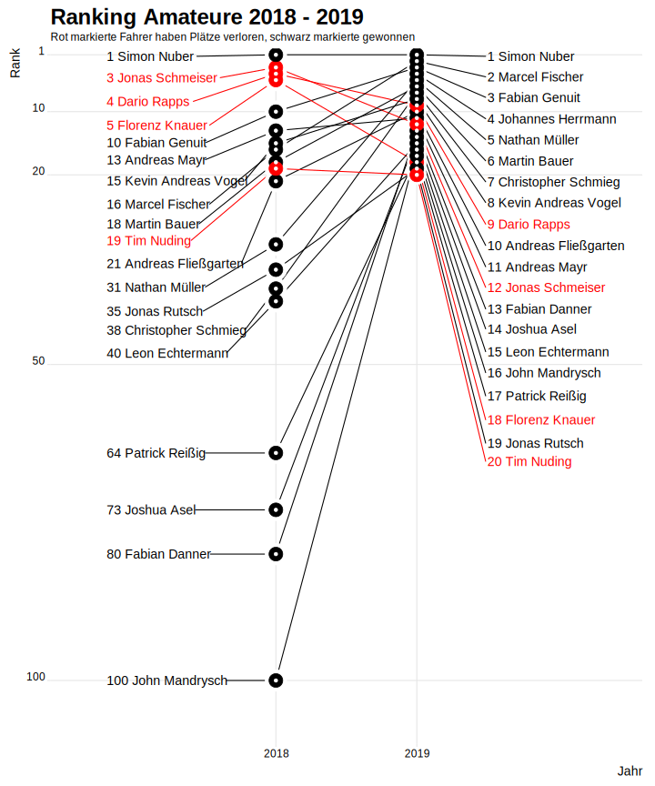

Amateurradsport
In der breiten Öffentlichkeit ist der Radsport im besten Fall mit den Namen von Profis verknüpft. Die Leistungen eines Tour de France -Siegers sind immens und für die Zeit, in der die Profiradsportler im Sommer in Mittelpunkt stehen, vergißt der geneigte Sportinteressent alles, was ansonsten in der breiten Diskussion steht. Die 3 Wochen im Hochsommer sind für den gesamten Radsport wichtig, da mit dem Interesse an solchen Großereignissen sich neue Sportbegeisterte finden lassen.
Wie viele andere Sportarten auch, hat sich der Radsport in den letzten Jahren sehr gewandelt. Man hat den Eindruck, dass es zwar immer weniger Kinder gibt, die in frühen Jahren Interesse am Radsport zeigen und in eine für viele Jahre dauernde Ausbildung oder besser Hinführung zum Leistungssport einsteigen. Dafür gibt es aber eine immer größere Zahl junger Erwachsener, die erst später auf der Suche nach geeigneten und herausfordernden Sportarten auf den Radsport aufmerksam geworden sind.
Das neue Punktesystem im Radsport
Aus bestimmten Gründen, die sich nicht unmittelbar erschließen, haben diese Späteinsteiger einen Boom bei den Jedermann -Rennen ausgelöst. Um diesen Sportlern auch den Weg in den Lizenz-Rennsport zu ermöglichen hat der BDR (Bund Deutscher Radfahrer) in Rahmen einer umfangreichen Reform des Systems rund um Ausschreibungen unter anderem auch das Punktesystem verändert. Nach dem Punktesystem wird für jede Platzierung in einem Rennen dem Fahrer eine bestimmte Punktzahl gegeben. Je nach Kategorie des Rennens kann es für eine Platzierung oder einen Sieg mal mehr oder weniger Punkte geben.
Bis einschließlich zum Jahr 2018 entschied über den Aufstieg in eine höhere Klasse ein errungener Sieg oder 5 Top10-Platzierungen im Kalenderjahr. War dadurch in einem Jahr ein Aufstieg geschafft, konnte der Fahrer in diesem und dem nächsten Jahr in dieser höheren Klasse fahren.
Um dann in dem auf dem Aufstiegsjahr folgenden Jahr in der höheren Klasse zu verbleiben, musste der Fahrer 5 Top10-Platzierungen schaffen.
Dieses altbewährte Punkte- und Aufstiegssystem ist seit dem Jahr 2019 so verändert worden, dass im Laufe eines Jahres an 2 Terminen im Jahr ein Schnitt in der Rangliste des BDR gemacht wird. Wer an einem der beiden Stichtagen - einer im Frühjahr und einer im Sommer - unter den Top 500der Rangliste ist, ist in der Elite-Klasse, wer in der Rangliste schlechter steht, wechselt in die sogenannte Amateur-Klasse.
Auswirkung des neuen Punktesystems
Mit der Umstellung auf dieses neue Punkteschema ist es für jeden Sportler, der seine Zugehörigkeit in eine Fahrerklasse kontrollieren will, wichtig, den genauen Punktestand zu kennen. In diesem Post soll eine erste Einschätzung dazu gemacht werden, ob das neue Punkteschema zu anderen Konstellationen in der Rangliste führt.
Zu diesem Zweck wird zu erst einmal die Rangliste des Jahres 2019 mit der des Jahres 2018 verglichen. Da die ursprüngliche Rangliste allerdings Profis und Amateure aller Klassen enthalten, wird die Rangliste auf die neuen Amateurklassen (Elite und Amateure) sowie die KT-Teams beschränkt. Alle höheren Profiklassen finden in der so neu entstandenen Rangliste keine Berücksichtigung.
Die Rangliste umfasst außerdem nur die Rennen, die zu den Kategorien 3.x, 4.x, 5.x, 6.x und 7.x gehören. Sie umfasst somit die typischen Rennen, die der klassische Amateur fährt.
Die folgende Tabelle zeigt die Anzahl der Fahrer, die in den beiden betrachteten Jahren 2018 und 2019 in der Rangliste geführt werden.

| colA | colB | colC |
|---|---|---|
| a | 1 | 45 |
| b | 2 | 25 |
| c | 3 | 15 |
qregäioerqjg
<div class="col-1-2">
<div class="content">
<p>...insert content left side...</p>
</div>
</div>
<div class="col-1-2">
<div class="content">
<p>...insert content right side...</p>
</div>
</div>
Share this post